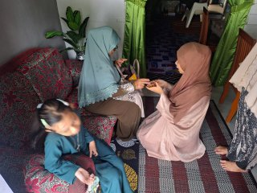
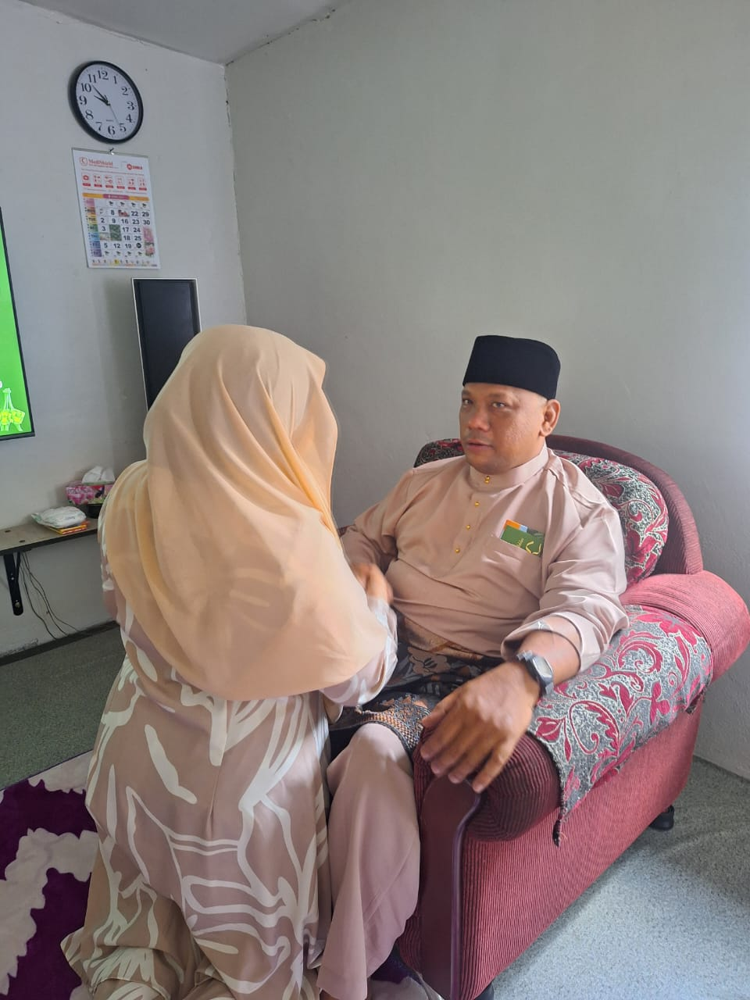
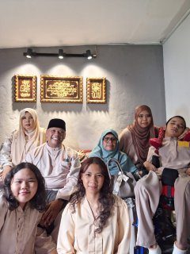
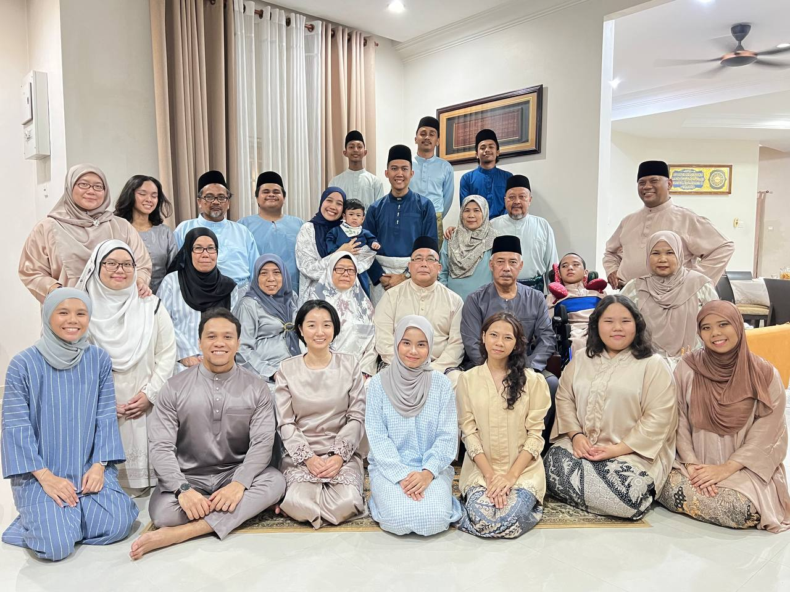
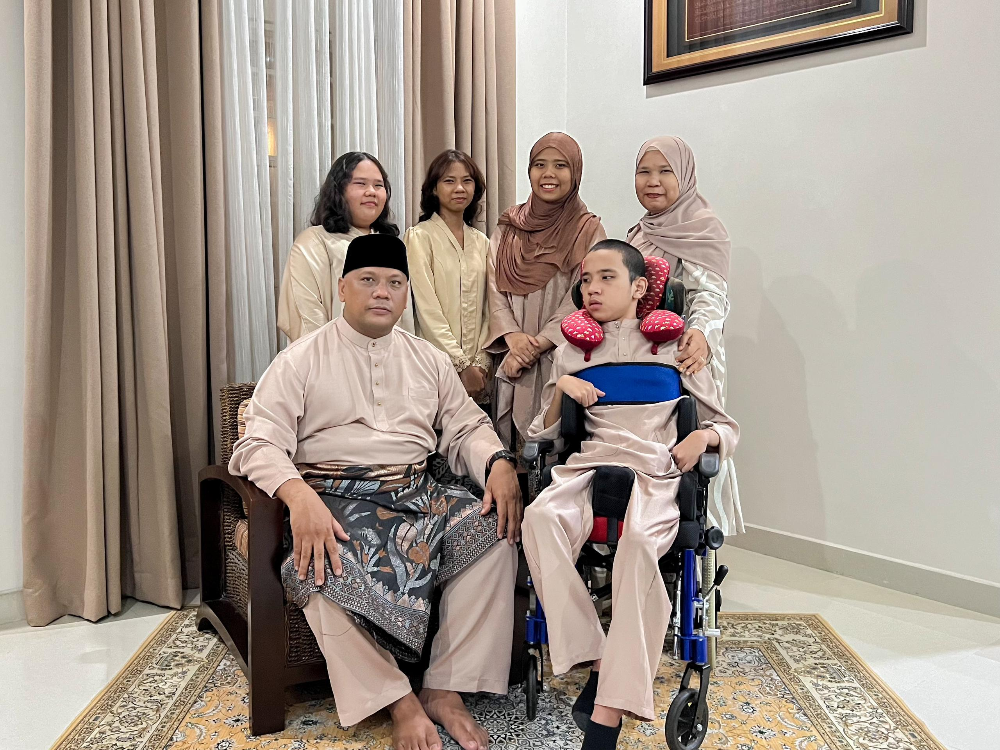
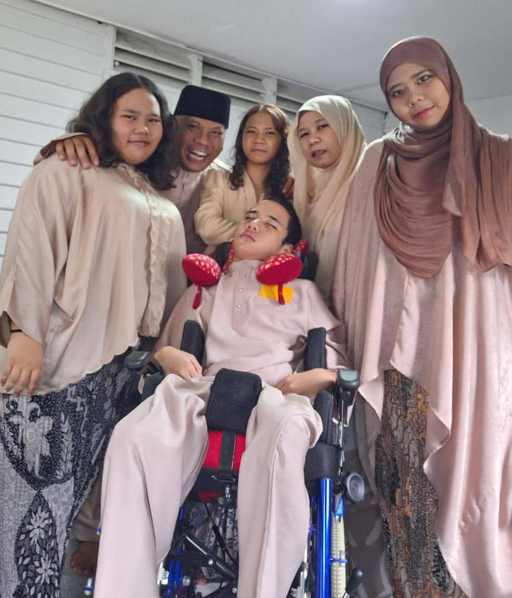
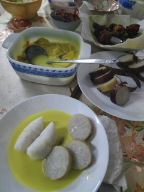
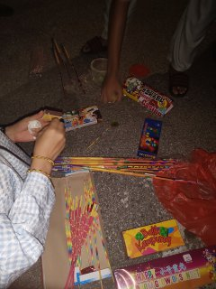
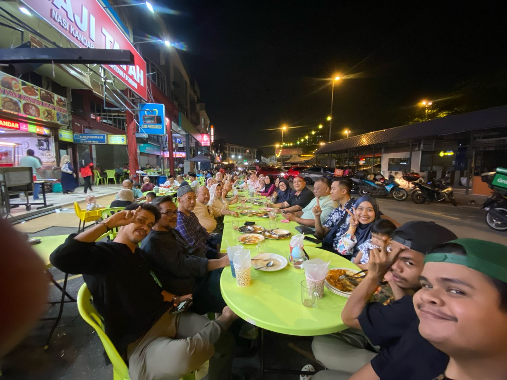

Traditions
Family Tradition
Common practice Eid al-Ftri
On the morning of Hari Raya Aidilfitri (usually before and immediately after performing the Eid al-Fitr prayer), Muslims who have lost relatives will visit their graves and present Surah Al-Fatihah or reciting surah Yaasin.
Give money to children
The open house will be held on Hari Raya itself or throughout the month of Syawal.
This my family traditions in Eid al-Ftri celebrations
Greetings of Raya to parents and relatives.
Click on the image to enlarge it.


Taking family pictures together.
Click on the image to enlarge it.




It is imperative to eat "lemang and rendang" in the morning on Hari Raya Aidilfitri.
Play with cousin's fireworks.
Together with all family went to "Mamak" to eating dinner.
Click on the image to enlarge it.



TOP
HOME